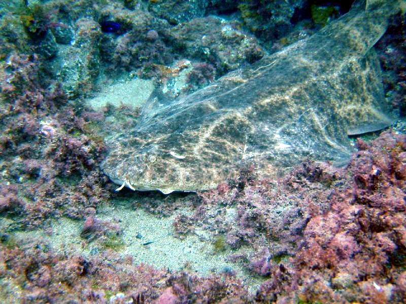

VOLVER
<
ORDEN
tiburón angelote
squatina dumerii
Derechos de atribución de fotografías
author-page-licence
Philippe Guillaume
Wikipedia
CC BY 2.0

Tiburón Angel también conocido. Puede alcanzar los 2,4 m .Caza semienterrado esperando su oportunidad para emboscar a algún pez o crustaceo despistado.No es peligroso pero puede morder si se le molesta .Hay histórias que cuentan que ha llegado a seguir a buceadores con la boca abierta . Y un zoólogo de 1776 un pescador perdió una pierna cuando lo sacaba de sus redes. Parecen histórias fuera de lugar pero escritas están,aunque personalmente ,no me las creo.
VOLVER